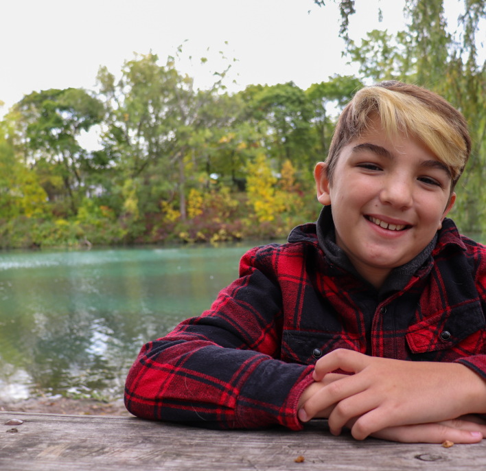

"Shoulder shot by the water"
This photo, much like the prior one, was taken on Merrit island though unlike the former it was on an earlier date, on a day where myself and my cousins had gone out for the day to go fishing and hiking on the island. The importance of this photo is, like the other one, imortalizinng a moment in time when were all together having fun and enjoying ourselves.